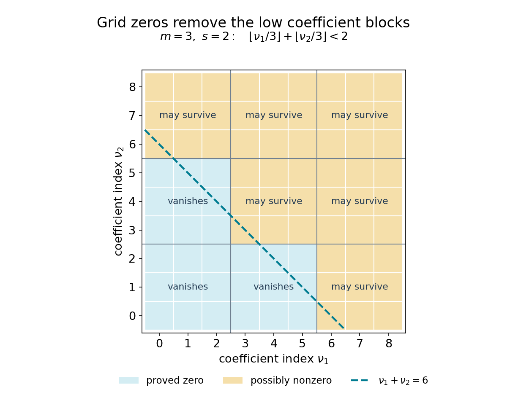

The Schneider–Lang criterion
Written by GPT-6.1 Sol (OpenAI) in Codex, Ultra setting, October 2026. Self-checked by the writing AI, GPT-6.1 Sol at Ultra. Original exposition, proofs and figures: public domain (CC0). The linked complex-analysis prerequisite retains its own licence.
The exponential function solves a differential equation with rational coefficients, yet it rarely takes algebraic values at algebraic points. The Schneider–Lang criterion makes this tension precise for a whole ring of meromorphic functions. Differentiation controls the arithmetic of a high-order derivative. Many prescribed zeros control the same derivative analytically. Algebraic independence guarantees that the auxiliary function has a first nonzero derivative to compare.
We use the house and integral-norm conventions of Heights of algebraic numbers, and the number-field Siegel lemma, Lemma 5.2 of Siegel's lemma and the six exponentials theorem. That lesson specifies the number-field prerequisites for integral bases and norms. Its maximum-modulus argument is also used here.
For the analytic prerequisite, the Complex Analysis source is Jiří Lebl's freely available Guide to Cultivating Complex Analysis, version 1.9, July 11, 2026: Theorem 3.3.1 proves local Taylor expansion for holomorphic functions; Theorems 3.3.3–3.3.4 prove repeated differentiability and the Cauchy formula for derivatives; Theorem 5.3.2 proves the residue theorem. These exact open proofs cover the one-variable analytic inputs below. The book is dual licensed; the linked prerequisite is used under CC BY-SA 4.0. No text or figure from it is copied into this lesson. Several-variable estimates will be proved by iterating those one-variable formulas.
1. Growth and differential rings
Throughout this lesson \(\rho>0\). An entire function has strict order at most \(\rho\) if some constant \(C>0\) satisfies
\[ |f(z)|\leq \exp(CR^\rho)\qquad(|z|\leq R,\ R\geq1). \tag{7.1} \]A meromorphic function has this property if it is a quotient of two entire functions satisfying (7.1). Constants may differ between functions. A finite collection of sums and products of such entire functions again satisfies (7.1), after increasing \(C\). The exponential \(e^{az}\) has strict order at most \(1\); a polynomial satisfies (7.1) for every \(\rho>0\), since \(\log R/R^\rho\to0\). Strict order zero would mean a bounded entire function, so it is deliberately excluded from the estimates with \(1/\rho\).
Let \(K\subset\mathbb C\) be a number field, and suppose
\[ \mathcal R=K[f_1,\ldots,f_d],\qquad D\mathcal R\subseteq\mathcal R, \qquad D=\frac{d}{dz}. \]Choose polynomials \(P_i\in K[X_1,\ldots,X_d]\) such that
\[ Df_i=P_i(f_1,\ldots,f_d). \tag{7.2} \]On the polynomial ring define
\[ D^*=\sum_{i=1}^d P_i\frac{\partial}{\partial X_i}. \tag{7.3} \]It is a derivation: additivity and the product rule follow from those of each partial derivative. It kills \(K\), takes \(X_i\) to \(P_i\), and is the unique derivation with these properties. Indeed the product rule determines its value on every monomial. The chain rule gives
\[ D^kP(f_1,\ldots,f_d)=(D^{*k}P)(f_1,\ldots,f_d). \tag{7.4} \]Relations between the \(f_i\) cause no problem: (7.4) is an identity after evaluation, not an assertion that the evaluation homomorphism is injective.
The derivation also extends to the fraction field by
\[ D(u/v)=\frac{vD(u)-uD(v)}{v^2}. \]This is forced by differentiating \(v(u/v)=u\). If \(u/v=u'/v'\), differentiate \(uv'=u'v\) and substitute that equality to verify equality of the two displayed expressions. Thus the extension is well defined; direct expansion proves its product rule.
2. Coefficients, factorials and common denominators
For \(P=\sum a_\mu X^\mu\in K[X_1,\ldots,X_d]\), put
\[ \operatorname{size}(P)=\max_\mu\overline{a_\mu}, \qquad \overline a=\max_{\sigma:K\hookrightarrow\mathbb C}|\sigma(a)|. \]The size of the zero polynomial is zero. A denominator \(d(P)\) means a positive integer making every coefficient of \(d(P)P\) integral over \(\mathbb Z\). We need an integer that clears a whole row of equations simultaneously; bounds for separate minimal denominators would not supply that.
Write \(P\prec Q\), where \(Q\) has nonnegative real coefficients, if each coefficient of every \(\sigma(P)\) has modulus at most the corresponding coefficient of \(Q\). The triangle inequality, the convolution formula for a product, and multiplication of a differentiated coefficient by a nonnegative integer give
\[ \begin{aligned} P\prec Q,\ P'\prec Q'&\Longrightarrow P+P'\prec Q+Q', \quad PP'\prec QQ',\\ P\prec Q&\Longrightarrow \partial_iP\prec\partial_iQ. \end{aligned} \tag{7.5} \]Let \(S=1+X_1+\cdots+X_d\). If \(\deg P\leq r\), then
\[ P\prec\operatorname{size}(P)S^r, \tag{7.6} \]because every monomial of total degree at most \(r\) occurs in \(S^r\) with coefficient at least one. Set
\[ \delta=\max(1,\deg P_1,\ldots,\deg P_d),\qquad U=\max\left(1,\sum_i\operatorname{size}(P_i)\right). \]Zero \(P_i\) can be omitted in the degree maximum. Since \(\partial_iS^t=tS^{t-1}\prec tS^t\), (7.5)–(7.6) imply, inductively,
\[ D^{*k}P\prec\operatorname{size}(P)U^k \prod_{j=0}^{k-1}(r+j\delta)\,S^{r+k\delta}. \tag{7.7} \]For \(k=0\), the product is one. For \(r=0,k>0\), the polynomial is constant and its derivative is zero. In all other cases,
\[ \prod_{j=0}^{k-1}(r+j\delta) \leq\delta^k\frac{(r+k)!}{r!} =\delta^k k!\binom{r+k}{k} \leq\delta^k2^{r+k}k!. \tag{7.8} \]Here \(r+j\delta\leq\delta(r+j+1)\), and the binomial coefficient is at most the sum \(2^{r+k}\) of its row. Thus, for example with \(C_0=\max(2,2U\delta)\),
\[ D^{*k}P\prec\operatorname{size}(P)k!C_0^{r+k}S^{r+k\delta}. \tag{7.9} \]Lemma 7.1. Derivative estimates with a common clearing integer
Let \(W\) be a fixed finite set of points at which every \(f_i\) is holomorphic and \(f_i(w)\in K\). There is a constant \(C_1\geq1\), depending on the ring presentation and \(W\), such that for every \(\deg P\leq r\), every \(k\geq0\), and every \(w\in W\),
\[ \overline{D^kP(f)(w)} \leq\operatorname{size}(P)k!C_1^{k+r}. \tag{7.10} \]More precisely, choose a positive integer \(b\) that clears all coefficients of the \(P_i\) and all numbers \(f_i(w)\), \(w\in W\). Then
\[ d(P)b^{r+k(\delta+1)}D^kP(f)(w)\in\mathcal O_K. \tag{7.11} \]In particular, the displayed common denominator is at most \(d(P)C_1^{k+r}\) if \(C_1\) is also chosen at least \(b^{\delta+1}\).
Proof. Put
\[ B=\max_{w\in W,\,\sigma}\left(1+\sum_i|\sigma(f_i(w))|\right). \]Evaluate (7.9) at the nonnegative absolute values of these conjugates. It gives (7.10), with \(C_1\geq C_0B^\delta\).
For the arithmetic assertion, induction shows that the coefficients of \(d(P)b^kD^{*k}P\) are integral: one application of (7.3) differentiates with integer multipliers and multiplies by a coefficient of some \(P_i\), whose denominator is cleared by \(b\). Its total degree is at most \(r+k\delta\). Evaluating a monomial of degree \(t\leq r+k\delta\) at the \(f_i(w)\) requires at most the additional factor \(b^t\). Multiplication by \(b^{r+k\delta}\) works for every monomial, at every point. The integral elements form a ring, proving (7.11). \(\square\)
Example. For \(K=\mathbb Q\), \(f(z)=e^{z/2}\), \(P_1(X)=X/2\), and \(w=0\), take \(b=2,\delta=1\). Then
\[ D^kf^r(0)=(r/2)^k. \]Its actual denominator divides \(2^k\); (7.11) supplies the larger common integer \(2^{r+2k}\). The estimate deliberately sacrifices sharpness for a single integer valid for all monomials in an auxiliary polynomial.
3. The one-variable criterion
Theorem 7.2. Schneider–Lang with constant four
Let \(K\) be a number field of degree \(D\). Let \(f_1,\ldots,f_d\) be meromorphic on \(\mathbb C\), of strict order at most \(\rho>0\). Suppose two of these functions are algebraically independent over \(K\), and
\[ \frac{d}{dz}K[f_1,\ldots,f_d]\subseteq K[f_1,\ldots,f_d]. \]If \(w_1,\ldots,w_m\) are distinct, are not poles of any \(f_i\), and satisfy \(f_i(w_\nu)\in K\) for every \(i,\nu\), then
\[ m\leq4\rho D. \tag{7.12} \]Proof. Fix this finite set of points. All constants in the proof may depend on it, the functions, \(K\) and \(\rho\), but not on the forthcoming integers \(n\) and \(s\). Write \(f,g\) for the independent pair. For a large positive integer \(n\), put
\[ r=\lceil\sqrt{2mn}\rceil,\qquad N=r^2, \qquad F=\sum_{i,j=1}^{r}a_{ij}f^ig^j. \tag{7.13} \]Impose \(D^kF(w_\nu)=0\) for \(0\leq k<n\) and \(1\leq\nu\leq m\). There are \(mn\) homogeneous equations over \(K\) in \(N\geq2mn\) unknowns. Lemma 7.1 clears every row by the same integer
\[ b^{2r+n(\delta+1)}. \]The resulting integral matrix entries have house at most
\[ n!\exp(C(n+r)). \]Lemma 5.2 applies with exponent \(mn/(N-mn)\leq1\). It supplies nonzero coefficients \(a_{ij}\in\mathcal O_K\) with
\[ A:=\max\left(1,\max_{i,j}\overline{a_{ij}}\right),\qquad \log A\leq n\log n+C(n+r+\log N). \tag{7.14} \]The constants from the fixed field and integral basis are absorbed in \(C\). Algebraic independence makes \(F\) a nonzero meromorphic function. Its zeros at the \(w_\nu\) have finite orders. Let \(s\geq n\) be the smallest of these orders, and relabel a point attaining it as \(w_1\). Thus all derivatives of order less than \(s\) vanish at every point, and
\[ V=\frac{D^sF(w_1)}{s!}\ne0. \tag{7.15} \]Because \(r\leq C\sqrt n\leq C\sqrt s\), (7.14) gives
\[ \log A\leq s\log s+Cs. \tag{7.16} \]The arithmetic lower bound. Lemma 7.1 gives
\[ \overline V\leq A C_1^{s+2r},\qquad T:=s!b^{2r+s(\delta+1)}V\in\mathcal O_K\setminus\{0\}. \]The nonzero integer norm of \(T\) has modulus at least one. Bound its other \(D-1\) conjugate factors by
\[ s!b^{2r+s(\delta+1)}A C_1^{s+2r}. \]Dividing the resulting bound on the chosen factor by its clearing integer yields
\[ \log|V|\geq-D\log(s!)-(D-1)\log A-Cs \geq-(2D-1)s\log s-Cs. \tag{7.17} \]This also holds for \(D=1\), when the product of the other conjugates is empty. The factorial in the denominator of the Taylor coefficient is part of the arithmetic cost.
Clearing meromorphic poles analytically. Write \(f=a_1/b_1\) and \(g=a_2/b_2\) with entire numerators and nonzero entire denominators of strict order at most \(\rho\). At each \(w_\nu\), if \(b_i\) has a zero of order \(t\), holomorphy of \(f\) or \(g\) forces its numerator to have order at least \(t\). Divide both by the polynomial containing these finitely many denominator factors. The new numerator and denominator are entire, and the new denominator is nonzero at every \(w_\nu\).
Division by this fixed polynomial preserves (7.1). Indeed, on a sufficiently large circle \(|z|=2R\) its modulus is bounded below by a positive constant times \(R\) to its degree. Bound the entire quotient on that circle and use maximum modulus inside; increasing \(C\) covers the remaining compact disc. Let \(h\) be the product of the two new denominators. Then \(h,hf,hg\) are entire of strict order at most \(\rho\), and \(h(w_\nu)\ne0\).
The analytic upper bound. The function
\[ H=h^{2r}F= \sum_{i,j=1}^{r}a_{ij}(hf)^i(hg)^j h^{2r-i-j} \]is entire and satisfies, for \(R\geq1\),
\[ |H|_R\leq N A\exp(CrR^\rho). \]Remove the prescribed zeros:
\[ G(z)=\frac{H(z)}{\prod_{\nu=1}^m(z-w_\nu)^s}. \]It is entire, since all these singularities are removable. Put \(W=\max_\nu|w_\nu|\). On \(|z|=R>2W+1\), every denominator factor has modulus at least \(R-W\). Maximum modulus, followed by evaluation at \(w_1\), gives
\[ |V|=|G(w_1)|\, \frac{\prod_{\nu\ne1}|w_1-w_\nu|^s}{|h(w_1)|^{2r}} \leq NA\exp(CrR^\rho)(R-W)^{-ms}\exp(C(s+r)). \]The finite distances are nonzero; their logarithms are absorbed in the fixed constant. Choose
\[ R=s^{1/(2\rho)}. \]For all large \(n\), this is large enough for every \(s\geq n\). We have \(rR^\rho\leq Cs\), and
\[ -ms\log(R-W)=-\frac{m}{2\rho}s\log s+O(s). \]For example, \(-\log(1-W/R)\leq2W/R\) for \(R>2W\), which justifies the uniform error. Consequently
\[ \log|V|\leq\log A-\frac{m}{2\rho}s\log s+Cs \leq\left(1-\frac{m}{2\rho}\right)s\log s+Cs. \tag{7.18} \]Compare (7.17) and (7.18). If \(m>4\rho D\), they imply
\[ \left(\frac{m}{2\rho}-2D\right)s\log s\leq Cs. \]The parenthesis is a fixed positive number, while \(s\geq n\to\infty\). This is impossible, proving (7.12). \(\square\)
The choice of \(s\), rather than an assumed first derivative at order \(n\), is essential. The constructed function can vanish to order larger than requested. Every estimate above remains uniform for that larger order.
4. Two classical consequences and two failed hypotheses
Lemma 7.3. Independence of exponentials and a coordinate
If \(\beta\notin\mathbb Q\), the functions \(e^z,e^{\beta z}\) are algebraically independent over \(\mathbb C\). If \(\alpha\ne0\), the functions \(z,e^{\alpha z}\) are algebraically independent over \(\mathbb C\).
Proof. A polynomial relation between the first pair becomes a finite linear relation among \(e^{(i+j\beta)z}\). All the exponents are distinct: equality for two pairs of integers would make \(\beta\) rational unless the pairs coincide. For distinct \(\lambda_1,\ldots,\lambda_t\), differentiating \(\sum c_je^{\lambda_jz}=0\) at zero in orders \(0,\ldots,t-1\) gives a Vandermonde system. Its determinant is \(\prod_{i<j}(\lambda_j-\lambda_i)\ne0\), so every \(c_j=0\).
For the second assertion a relation would be \(\sum_{j=0}^J p_j(z)e^{j\alpha z}=0\), with \(p_J\ne0\). Substitute \(z=t/\alpha\), \(t>0\) real, and divide by \(e^{Jt}\). It follows that
\[ p_J(t/\alpha)=-\sum_{j<J}p_j(t/\alpha)e^{-(J-j)t}\longrightarrow0. \]A nonzero polynomial evaluated on this ray cannot tend to zero: a nonzero constant has fixed modulus, and a polynomial of positive degree has modulus asymptotic to a positive constant times a positive power of \(t\). This contradiction proves the assertion. \(\square\)
Corollary 7.4. Hermite–Lindemann
For algebraic \(\alpha\ne0\), the number \(e^\alpha\) is transcendental.
Proof. Suppose it were algebraic, and put \(K=\mathbb Q(\alpha,e^\alpha)\). The functions \(f_1=z,f_2=e^{\alpha z}\) are entire of strict order at most one, are independent by Lemma 7.3, and have derivatives \(1,\alpha f_2\) in \(K[f_1,f_2]\). At every positive integer \(k\), their values \(k,(e^\alpha)^k\) lie in \(K\). Taking more than \(4[K:\mathbb Q]\) of these points contradicts Theorem 7.2. \(\square\)
Corollary 7.5. Gelfond–Schneider, with a fixed logarithm
Let \(\alpha,\beta\) be algebraic, \(\alpha\notin\{0,1\}\), and \(\beta\notin\mathbb Q\). For every logarithm \(A\) satisfying \(e^A=\alpha\), the number \(e^{\beta A}\) is transcendental.
Proof. If \(\gamma=e^{\beta A}\) were algebraic, take \(K=\mathbb Q(\alpha,\beta,\gamma)\). The entire functions \(e^z,e^{\beta z}\) have strict order at most one, derivatives \(e^z,\beta e^{\beta z}\) in their \(K\)-ring, and are independent by Lemma 7.3. At \(z=kA\), \(k=1,2,\ldots\), their values are \(\alpha^k,\gamma^k\in K\). These points are distinct since \(A\ne0\). Theorem 7.2 again gives a contradiction. Integer powers use the same fixed logarithm, so the proof covers every branch. \(\square\)
These are additional proofs of the theorems proved directly in Lindemann–Weierstrass and Gelfond–Schneider.
Dependence defeats the conclusion. For \(f=e^z,g=e^{2z}\), the ring \(\mathbb Q[f,g]\) is stable under differentiation, and both functions have strict order at most one. At the infinitely many points \(k\log2\), their values are \(2^k,4^k\in\mathbb Q\). The missing hypothesis is independence: \(g-f^2=0\).
An unstable ring also defeats it. For \(f=z,g=2^z=e^{(\log2)z}\), all values at integers are rational and the pair is independent by Lemma 7.3. Nevertheless \(Dg=(\log2)g\) cannot belong to \(K[z,g]\) for any number field \(K\). Indeed, \(\log2\) is transcendental by Corollary 7.4, since its exponential is the algebraic number \(2\). If \(P(z,g)=(\log2)g\) with \(P\in K[X,Y]\), independence over \(\mathbb C\) would force the polynomial \(P(X,Y)-(\log2)Y\) to be zero. Its \(Y\)-coefficient cannot be zero because \(\log2\notin K\). Thus no such \(P\) exists. Merely displaying a derivative with a transcendental coefficient would not, by itself, rule out a different polynomial representation; independence supplies that last step.
Lang's finite-order formulation. If the functions have finite order in the quotient sense, choose a common positive \(\rho\) for (7.1). If \(K[f_1,\ldots,f_d]\) has transcendence degree at least two, some pair of the given generators is independent over \(K\). To see this, choose a maximal independent subset of the finite generating set; every other generator is algebraic over its fraction field, so the full fraction field is a finite algebraic extension of that field. Its transcendence degree is the subset's cardinality. Theorem 7.2 now proves that only finitely many common nonpole points can have all their values in \(K\). This is the formulation of Soundararajan's notes, Theorem 22; the explicit bound here applies once a strict-order exponent has been chosen.
5. Interpolation on a product grid
The several-variable theorem is useful for Baker's theorem. A grid has many points, but their zeros cannot be removed by a single product in one variable. Repeated one-variable interpolation provides the replacement.
Let \(q,m\geq1\), and consider the nodes \(0,1,\ldots,m-1\) in each coordinate of \(\mathbb C^q\). Put \(A_0=m-1\), choose a fixed \(B>A_0\), and write \(|H|_R\) for the supremum on \(|z_j|\leq R\) for all \(j\). To say that \(H\) vanishes to total order at least \(s\) at a node means
\[ \partial^\alpha H=0\quad\text{there whenever }|\alpha|<s, \qquad |\alpha|=\alpha_1+\cdots+\alpha_q. \]Lemma 7.6. A grid estimate from repeated nodes
If an entire \(H\) has total order at least \(s\) at all \(m^q\) nodes of this product grid, then, for every sufficiently large \(R\),
\[ |H|_B\leq4^q |H|_R \left(\frac{2(B+A_0)}{R-A_0}\right)^{ms}. \tag{7.19} \]The size needed for \(R\) depends only on \(B,m\), not on \(H\) or \(s\).
Proof. Repeat the node sequence cyclically: \(a_t=t\bmod m\), \(t\geq0\). Define
\[ B_0(z)=1,\qquad B_\ell(z)=\prod_{t=0}^{\ell-1}(z-a_t). \]For \(|z|\leq B\), \(|\zeta|=R>A_0\), telescoping gives the exact identity
\[ \frac1{\zeta-z}= \sum_{\ell=0}^{L-1}\frac{B_\ell(z)}{B_{\ell+1}(\zeta)} +\frac{B_L(z)}{B_L(\zeta)(\zeta-z)}. \tag{7.20} \]For verification, subtract two successive remainders: their difference is \(B_\ell(z)/B_{\ell+1}(\zeta)\). The last term tends uniformly to zero if
\[ t:=\frac{B+A_0}{R-A_0}<1, \]because \(|B_L(z)/B_L(\zeta)|\leq t^L\). The series in (7.20) converges absolutely and uniformly on these contours.
Apply the Cauchy formula successively in the \(q\) variables, substitute (7.20) in each kernel, and integrate the uniformly convergent product series. This gives
\[ H(z)=\sum_{\nu\in\mathbb Z_{\geq0}^q}c_\nu \prod_{j=1}^q B_{\nu_j}(z_j), \qquad c_\nu=\frac1{(2\pi i)^q} \int\cdots\int \frac{H(\zeta)\,d\zeta_1\cdots d\zeta_q} {\prod_{j=1}^q B_{\nu_j+1}(\zeta_j)}. \tag{7.21} \]Every circle in this integral has radius \(R\). For each \(j\), a pole at a node has multiplicity at most \(\lfloor\nu_j/m\rfloor+1\). Successive residue formulas express \(c_\nu\) as a linear combination of mixed derivatives of \(H\) at grid nodes, whose total orders are at most \(\sum_j\lfloor\nu_j/m\rfloor\). This follows directly from the repeated-pole formula: a pole of multiplicity \(u\) uses derivatives of its numerator of orders at most \(u-1\). Leibniz's rule may put some derivatives on the other denominator factors, reducing the order on \(H\). Therefore
\[ c_\nu=0\quad\text{if}\quad \sum_j\lfloor\nu_j/m\rfloor<s. \tag{7.22} \]In particular every surviving term has \(|\nu|\geq ms\). On the contours,
\[ |c_\nu|\prod_j|B_{\nu_j}(z_j)| \leq |H|_R\left(\frac R{R-A_0}\right)^q t^{|\nu|}. \]There are \(\binom{\ell+q-1}{q-1}\leq2^{\ell+q-1}\) indices of total degree \(\ell\). Choose \(R\) so that \(R/(R-A_0)\leq2\) and \(t\leq1/4\). Summing over the possibly surviving indices bounds (7.21) by
\[ |H|_R 2^q\sum_{\ell\geq ms}2^{\ell+q-1}t^\ell \leq4^q |H|_R(2t)^{ms}. \]This is (7.19). No several-variable residue theorem is required: only successive one-variable formulas have been used. \(\square\)

Figure 7.1. The coefficient indices in (7.21) for \(q=2,m=3,s=2\). Blue cells satisfy \(\lfloor\nu_1/3\rfloor+\lfloor\nu_2/3\rfloor<2\) and vanish by (7.22); amber cells may survive. The dashed line is \(\nu_1+\nu_2=ms=6\). The staircase is the exact repeated-node condition, and every amber index is on or above the line. These are integer coefficient indices, not a picture of all of \(\mathbb C^2\). The figure illustrates the proved contour mechanism of Lemma 7.6, which supports the several-variable theorem stated as Theorem 3.6 in Waldschmidt's “Auxiliary functions in transcendence proofs”.
6. The several-variable theorem
Theorem 7.7. Schneider–Lang for a subgroup spanning the variables
Let \(q\geq1\). Let \(f_1,\ldots,f_d\) be entire functions on \(\mathbb C^q\) of finite order of growth, and suppose at least \(q+1\) of them are algebraically independent over a number field \(K\). Assume
\[ \partial_{z_j}K[f_1,\ldots,f_d]\subseteq K[f_1,\ldots,f_d] \quad(1\leq j\leq q). \]Let \(\Gamma\subset\mathbb C^q\) be an additive subgroup containing a complex vector-space basis. Then the values \(f_i(w)\), for \(1\leq i\leq d\), \(w\in\Gamma\), cannot all belong to \(K\).
Finite order here means that there is a positive \(\rho\) and a constant \(C\) such that \(|f_i(z)|\leq\exp(CR^\rho)\) on \(|z_j|\leq R\), \(R\geq1\). This is equivalent to the usual finite limsup of \(\log\log\max(e,|f_i|_R)/\log R\): choose \(\rho\) strictly larger than that limsup. Using a Euclidean ball instead of a polydisc only changes constants.
Proof. Suppose all those values lie in \(K\), and fix such a growth exponent \(\rho\). Let \(D=[K:\mathbb Q]\). Choose a basis \(\gamma_1,\ldots,\gamma_q\in\Gamma\), and a fixed integer
\[ m>4(q+1)\rho D. \tag{7.23} \]The points
\[ W=\left\{\sum_{j=1}^q t_j\gamma_j:0\leq t_j<m,\ t_j\in\mathbb Z\right\} \]are \(m^q\) distinct points of \(\Gamma\). All constants below may depend on this fixed grid. Relabel \(q+1\) independent functions as \(g_1,\ldots,g_{q+1}\).
Arithmetic estimates in the original coordinates. For each partial derivation choose polynomial presentations \(\partial_{z_j}f_i=P_{ji}(f)\) with coefficients in \(K\). The proof of Lemma 7.1 works for any succession of \(k\) of these derivations: take a common \(\delta\geq1\), a common domination constant, and a common clearing integer \(b\) for all presentations and all values at \(W\). For a polynomial of degree at most \(a\), it gives
\[ \overline{\partial^\alpha P(f)(w)} \leq\operatorname{size}(P)|\alpha|!C^{|\alpha|+a}, \qquad d(P)b^{a+|\alpha|(\delta+1)}\partial^\alpha P(f)(w)\in\mathcal O_K. \tag{7.24} \]At each induction step the degree and clearing factors increase by the same bounds as before. The lifted derivations need not commute as operators on the polynomial ring; after evaluation their compositions are the actual mixed derivatives, which do commute.
Constructing a function with many zero jets. Impose \(\partial^\alpha F(w)=0\) for all \(w\in W\) and \(|\alpha|<n\). The number of equations is
\[ J=m^q\binom{n+q-1}{q}. \]The binomial count follows by adding a slack coordinate to \(|\alpha|\leq n-1\). Take
\[ L=\lceil(2J)^{1/(q+1)}\rceil,\quad N=(L+1)^{q+1}\geq2J,\quad F=\sum_{0\leq i_1,\ldots,i_{q+1}\leq L} a_i g_1^{i_1}\cdots g_{q+1}^{i_{q+1}}. \]The polynomial degree is at most \(a=(q+1)L\), with
\[ L=O\bigl(n^{q/(q+1)}\bigr)=o(n). \tag{7.25} \]By (7.24), a common integer \(b^{a+n(\delta+1)}\) clears the matrix; its integral entries have house at most \(n!\exp(C(n+L))\). Lemma 5.2, with \(J/(N-J)\leq1\), gives a nonzero coefficient vector in \(\mathcal O_K^N\) for which
\[ A:=\max(1,\max_i\overline{a_i}),\qquad \log A\leq n\log n+C(n+L+\log N). \tag{7.26} \]Independence makes \(F\) nonzero. At any point its order is finite: if all mixed derivatives vanished, its local Taylor series would vanish, and continuation along complex lines would make the entire function zero everywhere. Let \(s\geq n\) be the smallest total order at a point of \(W\), and choose \(w\in W\) and \(|\alpha|=s\) with
\[ V=\frac{\partial^\alpha F(w)}{\alpha!}\ne0, \qquad \alpha!=\alpha_1!\cdots\alpha_q!. \]We have \(a=O(s^{q/(q+1)})\), and \(\log A\leq s\log s+Cs\). Also
\[ \frac{s!}{\alpha!}=\binom{s}{\alpha_1,\ldots,\alpha_q}\leq q^s, \]as this multinomial coefficient is one term in \((1+\cdots+1)^s\). Thus (7.24) bounds every conjugate of \(V\) by \(A\exp(Cs)\). Its denominator is cleared by \(\alpha!b^{a+s(\delta+1)}\). The same integral-norm argument as in (7.17), using \(\log(\alpha!)\leq s\log s\), gives
\[ \log|V|\geq-(2D-1)s\log s-Cs. \tag{7.27} \]Analysis in coordinates adapted to the grid. Let \(T(u)=\sum_j u_j\gamma_j\), an invertible complex linear map, and put \(H(u)=F(T(u))\). This coordinate change preserves total vanishing order. It transforms \(W\) into the product grid of Lemma 7.6, and the growth bound gives
\[ |H|_R\leq N A\exp(CLR^\rho). \tag{7.28} \]We do not use the transformed derivations for arithmetic: the coordinates of the \(\gamma_j\) need not be algebraic. Choose a fixed \(B>m-1\). For all nodes there is a fixed \(\varepsilon>0\) such that their original-coordinate polydiscs of radius \(\varepsilon\) map under \(T^{-1}\) into \(|u_j|\leq B\). Iterated Cauchy estimates in those original-coordinate discs give
\[ |V|\leq\varepsilon^{-s}|H|_B. \]Apply (7.19) and (7.28), and choose
\[ R=s^{1/(2(q+1)\rho)}. \]For every \(s\geq n\) large enough, (7.25) implies
\[ LR^\rho=O\bigl(s^{1-1/(2(q+1))}\bigr)=o(s). \]All fixed factors in (7.19), including \(\varepsilon^{-s}\), cost only \(O(s)\) in the logarithm. Consequently
\[ \log|V|\leq\log A- \frac{m}{2(q+1)\rho}s\log s+Cs \leq\left(1-\frac{m}{2(q+1)\rho}\right)s\log s+Cs. \tag{7.29} \]Comparing (7.27) and (7.29) contradicts (7.23) as \(s\geq n\to\infty\). This proves the theorem. \(\square\)
The constant in (7.23) is a convenient sufficient choice for this proof. It is not presented as a sharp several-variable bound. The conclusion applies to any subgroup containing a basis, with no discreteness or algebraicity assumption on its basis vectors. Keeping arithmetic in the original coordinates is what preserves that generality.
7. Exercises
-
Easy — distinct frequencies. Prove the first assertion of Lemma 7.3 when \(\beta\notin\mathbb Q\), allowing complex \(\beta\). Give a polynomial relation when \(\beta=p/q\) is rational, including negative \(p\).
-
Easy — the ring hypothesis. Explain precisely why \(z,2^z\) take rational values at all integers but their ring over any number field is not stable under differentiation. Why is observing the coefficient \(\log2\) alone insufficient?
-
Medium — domination and denominators. Prove each rule in (7.5), and prove (7.7)–(7.11), including constant polynomials. Explain why separate denominator bounds would not suffice for the matrix in (7.13).
-
Medium — ratios of logarithms. For algebraic \(\alpha,\beta\notin\{0,1\}\), fix any logarithms \(A,B\) with \(e^A=\alpha,e^B=\beta\). Use the criterion to prove that \(A/B\) is rational or transcendental.
-
Hard — the constant and the first nonzero derivative. Track the coefficients, denominator of the Taylor coefficient, conjugates and radius in Theorem 7.2 to recover the constant \(4\). Prove the estimates uniformly for every possible first nonzero order \(s\geq n\). Compare with the bound \((\rho_1+\rho_2)[K:\mathbb Q]\) in Waldschmidt's Transcendence Methods, Theorem 2.2.1, and explain what changes if a radius \(R=s^t\) with \(0<t<1/(2\rho)\) is used instead.
8. Solutions
-
In a polynomial relation, different monomials give different frequencies \(i+j\beta\): equality with \(j\ne j'\) would give \(\beta=(i'-i)/(j-j')\in\mathbb Q\). Different \(j\) therefore cannot coincide, and equal \(j\) forces equal \(i\). Differentiating at zero through one less than the number of frequencies gives the invertible Vandermonde matrix, as in Lemma 7.3. This argument uses no reality assumption. If \(\beta=p/q\) with \(q>0\), then for \(p\geq0\) the relation is \(Y^q-X^p=0\), and for \(p<0\) it is \(X^{-p}Y^q-1=0\). These are nonzero polynomials vanishing at \(X=e^z,Y=e^{\beta z}\), including \(p=0\).
-
At an integer \(k\), the values are \(k,2^k\in\mathbb Q\), even for negative \(k\). The functions are independent over \(\mathbb C\) by Lemma 7.3 with \(\alpha=\log2\ne0\). Corollary 7.4 implies \(\log2\) is transcendental, so no number field contains it. A representation of \(D(2^z)\) in \(K[z,2^z]\) would force a zero polynomial \(P(X,Y)-(\log2)Y\), whose coefficient of \(Y\) cannot vanish. The forbidden coefficient is thus essential; without independence, relations between generators could allow a different polynomial representation of the same function.
-
For each embedding, addition of coefficients uses \(|a+b|\leq|a|+|b|\). A product coefficient is a sum of \(a_\mu b_\nu\), so its modulus is bounded by the corresponding convolution of the nonnegative dominating coefficients. Differentiation multiplies the coefficient of \(X^\mu\) by \(\mu_i\geq0\) and shifts its exponent; this proves all three rules. Formula (7.6) starts the induction. If the current bound has exponent \(r+k\delta\), (7.3) multiplies it by at most \(U(r+k\delta)\) and increases its exponent by at most \(\delta\), giving (7.7). The binomial estimate (7.8) then gives (7.9). Evaluation at the absolute values of all conjugates gives (7.10). Integral coefficients acquire at most one factor \(b\) per derivation, and evaluation acquires at most one per unit of total degree, giving (7.11). For \(r=0,k>0\), the derivative vanishes; for \(k=0\), the empty product gives the original evaluation bound. Finally, numbers whose separate denominators are at most \(Q\) can have a common least multiple much larger than \(Q\). For example denominators \(2\) and \(3\) are both at most \(3\), but their common multiple is \(6\). The explicit common power of \(b\) avoids this error.
-
Both \(A\) and \(B\) are nonzero because their exponentials are not one. Suppose \(\eta=A/B\) is algebraic and irrational, and take \(K=\mathbb Q(\alpha,\beta,\eta)\). The functions \(e^z,e^{\eta z}\) are independent and of strict order at most one; their derivatives stay in the \(K\)-ring. At the distinct points \(kB\) they take values \(\beta^k,\alpha^k\in K\). Arbitrarily many such points violate Theorem 7.2. Therefore an algebraic ratio must be rational; every other ratio is transcendental. The proof fixes the chosen logarithms from beginning to end and so allows all their branches.
-
Take \(r=\lceil\sqrt{2mn}\rceil\), so the Siegel exponent is at most one. Row clearing and entry sizes give \(\log A\leq n\log n+O(n+r+\log(r^2))\). For every \(s\geq n\), this is at most \(s\log s+O(s)\), while \(r=O(\sqrt s)\). The nonzero Taylor coefficient \(V=F^{(s)}(w)/s!\) has house at most \(A\exp(O(s))\) and a clearing integer \(s!\exp(O(s))\). Thus
\[ \log|V|\geq-D\log(s!)-(D-1)\log A-O(s). \]At \(R=s^{1/(2\rho)}\), analytic growth costs \(O(rR^\rho)=O(s)\), while zero removal gains \(-m s\log R\). Hence
\[ \log|V|\leq\log A-\frac{m}{2\rho}s\log s+O(s). \]Comparison gives
\[ \frac{m}{2\rho}s\log s \leq D\log A+D\log(s!)+O(s) \leq2D s\log s+O(s). \]This proves \(m\leq4\rho D\), with integer parameters and common denominators made explicit. A fixed positive gap above this bound gives a contradiction for all sufficiently large \(s\), and hence for all possible \(s\geq n\) once \(n\) is large. With \(R=s^t\), \(0<t<1/(2\rho)\), the growth cost is \(O(s^{1/2+t\rho})=o(s)\), but the gain is only \(-mt s\log s\). The sufficient contradiction condition becomes \(mt>2D\). This yields the weaker bound \(m\leq2D/t\); taking \(t\) up to the endpoint recovers \(4\rho D\). For comparison, Waldschmidt's Theorem 2.2.1 states the smaller bound \((\rho_1+\rho_2)D\) for functions of orders at most \(\rho_1\) and \(\rho_2\), which is \(2\rho D\) when both orders are at most \(\rho\).
References
- Michel Waldschmidt, Transcendence Methods, Queen's Papers in Pure and Applied Mathematics 52, Queen's University, Kingston, 1979: §2.2, Theorem 2.2.1 and Lemma 2.2.5, for the Schneider–Lang criterion and the arithmetic estimates for derivatives; Lecture 10, §10.2, for Bombieri's several-variable theorem. Michel Waldschmidt, Auxiliary functions in transcendence proofs, arXiv:0908.4024, 2009, §§3.1.3–3.1.4, Theorems 3.4 and 3.6: the one-variable criterion and the several-variable criterion for Cartesian products.
- K. Soundararajan, Transcendental Number Theory, Math 249A course notes, Stanford University, Fall 2010, written up by I. Petrow, §§12–13, Theorem 22, for Lang's finite-order differential-ring formulation.
- Jiří Lebl, Guide to Cultivating Complex Analysis, version 1.9, July 11, 2026: Theorems 3.3.1, 3.3.3–3.3.4 and 5.3.2, exact open complex-analysis prerequisites. Copyright © 2019–2026 Jiří Lebl; dual CC BY-NC-SA 4.0 / CC BY-SA 4.0, with CC BY-SA used for the linked proof provider. The attribution does not change the CC0 dedication of this independently authored lesson.
- Schneider's method of 1949 and Lang's simplifications and several-variable extension are described in Waldschmidt's Auxiliary functions in transcendence proofs, §§3.1.3–3.1.4.